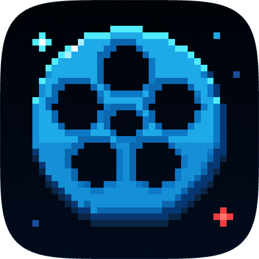
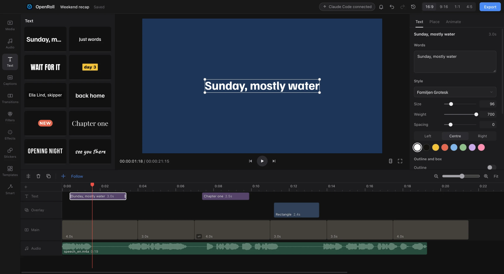

Edit with AI
Claude Code, Codex and Cursor can work on the open project with you. You see each change live, and undo works as usual.

OpenRollFree, open source alternative to CapCut
Captions, background removal, beat cuts and vertical reframing all happen on your machine. Projects are plain files you keep, and exports never carry a watermark.

Claude Code, Codex and Cursor can work on the open project with you. You see each change live, and undo works as usual.
A magnetic main track, ripple and roll edits, slip, markers and J K L shuttle. Playback holds 60 fps on 4K.
Speech to text on your computer, with word highlights and SRT or VTT export. Smart cut removes the silences.
Noise removal, voice enhance, music that dips under speech, beat detection and text to speech.
24 filters, 22 effects, LUTs, curves, masks, green screen and keyframes on any value.
Background removal, stabilising, vertical reframe, smooth slow motion and upscaling.
Long video to shorts, picture in picture, split screen and safe zones for TikTok, Reels and Shorts.
MP4, WebM, ProRes, GIF and audio. Exports run in the background while you keep editing.
19 starter templates, a community library and 14 free fonts. Speed ramps follow a curve you draw.
The command installs the right build for your computer and checks it against the release checksums. The regular installers are listed under each one.
If your computer shows a popup the first time you open OpenRoll, that's only because the app isn't code signed yet. The install command skips it.
Yes. OpenRoll is open source under GPL 3.0. There is no paid tier, no trial and no watermark on exports.
No. Editing, captions, background removal and exports all run on your computer. OpenRoll goes online to check for updates and to download a model the first time you use a feature like captions.
If your computer shows a popup the first time you open OpenRoll, that's only because the app isn't code signed yet. On a Mac, close it, then go to System Settings, Privacy and Security, and click Open Anyway. On Windows, click More info, then Run anyway.
Yes. Turn on "Let AI tools edit with you" in Settings, and Claude Code, Codex, Cursor and other MCP tools can edit the open project. You see each change as it happens, and you can undo it like any other edit.
New versions download in the background and install when you quit. If you'd rather choose when, turn that off in Settings.
Report bugs and share ideas in GitHub issues. If you want to send a change, CONTRIBUTING explains how.